Myth of the Toss¶
John Yandell
"Just throw the ball straight up in front of you and hit it at the top of the toss."
This article really should be titled "myths" of the toss, not "the" myth of the toss, because there are two predominant misunderstandings here that have damaged players at all levels for years.
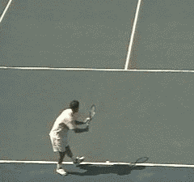
What's the real shape of the service toss? Look closely at how Pete's toss arcs from right to left, dropping up to two feet at contact.
The first has to do with toss height - the common belief that players should hit the ball at the top of the toss.
The second myth has to do with the tossing motion and the placement of the toss. This is the belief that the toss and the motion of the tossing arm should be straight up and down in front of the body.
To check if the toss is correct, players are often taught to let the toss drop, so that it falls to the court in front of the front foot (for a right-handed player.)
Advanced Tennis high speed video shows that neither of these two beliefs are accurate. They don't describe what top players do when they toss. Following these two myths can destroy your service rhythm and drastically reduce your body leverage, power, and spin.
Myth Versus Reality
When it comes to tossing height, the fact is virtually every player on tour hits the toss when the ball is on the way down. In most cases the ball has fallen substantially from the top of the toss, up to two feet or more at contact.
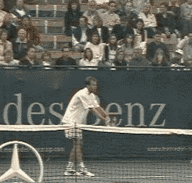
Even players with quick motions like Rusedski make contact well below the top of the toss.
Pete Sampras, Greg Rusedski, Mark Philippoussis, Marat Safin, Andy Roddick, Taylor Dent, Gustavo Kuerton, take your pick of the good servers. All of them toss the ball well above the contact point.
Goran Ivanesivic comes the closest to making contact at the top of the toss, but go to ProStrokes Gallery and see for yourself-even his toss has fallen a few inches at the moment of contact.
As for the motion of the tossing arm, no top player uses a straight down and up motion. This is because virtually every good server starts with his shoulders sideways to the net, or turns them sideways at the start of the motion. This means that the tossing arm turns sideways as well.
With the shoulders sideways, the tossing arm no longer points straight ahead. Instead it points toward the sideline. The more extreme the shoulder turn, the more directly the tossing arm points at the sideline.
In the case a player like Pete Sampras, who has the most shoulder turn in the game, the tossing arm can end at a right angle to the sideline (or parallel to the baseline) at the time he releases the ball.
For top servers, the tossing arm doesn't move straight up and down, and neither does the flight of the ball during the toss. Rather than moving up and down on a straight line, the path of the ball toss is actually curved like an arc.
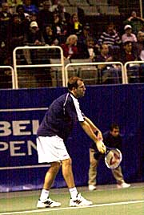
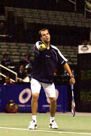
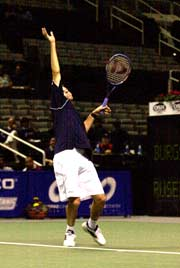
Rusedski's tossing motion. Note how just before the release his tossing arm is angled toward the sideline.
Because the tossing arm is pointing to the side, it's necessary for the server to toss the ball back towards the contact zone on an arc. For a right handed player, this arc is from the players right to left.
Since the path of the toss is a curve, not straight up and down, there is no way for the toss to land in front of the server's front foot. Instead, of dropping directly in front of the front foot, the toss would actually land on the left side of the body.
Sampras Versus Rusedski
Let's examine the toss height, the tossing motion, and the placement of the toss by comparing two of the top servers in the pro game, Pete Sampras and Greg Rusedski. They make good examples not only because of their serving effectiveness, but because of the differences in their technical styles.
Pete, a righty, has a much higher toss, a much slower rhythm, much more body coil, and hits with as much topspin on his first serve as any player in the game.
Rusedski a lefty, with a much lower toss, a very quick delivery, less knee bend and shoulder turn, and a heavily sliced ball.
The two players probably come close to representing the technical serving extremes in the pro game. But they do share two things when it comes to the toss: both hit the ball well on the way down, and also, while the ball is traveling on an arcing path from the release of the toss back toward the contact zone.
Toss Height
Let's look at the height of the toss first. It has been argued that there are two reasons for hitting the ball at the top of the toss. First, at the top of the toss, the ball is actually stationary for a split second - supposedly, this makes it easier to time. The second argument for hitting the ball at the top is that it forces the player to speed up the motion and therefore increases racquet head speed.
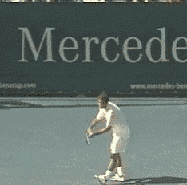
Watch the arc in Pete's toss, moving from his right to his left and dropping as much as two feet before contact.
Neither of these reasons makes sense. The supposed timing advantage of hitting the ball when it is still at the top of the toss is negligible at best. When the ball drops two feet or so before contact, it's velocity is minimal, 15 mph or less depending on the height of the drop. This is far less than the speed of a groundstroke hit by an intermediate player (about 40mph). So if you have the ability to rally at even moderate speeds, hitting a ball dropping at the much slower speed of your toss isn't going to be a problem.
Second, regarding the alleged gain in racquet head speed from the lower toss, our studies have shown players with the most racquet head speed, such as Pete, often have the highest tosses.
A side by side comparison with Rusedski, who has a much lower toss and a much quicker overall motion, demonstrated the time from racquet drop to contact was indistinguishable between the two players. If Rusedski's quicker motion is giving him more racquet head speed, this gain is easily matched by the deeper knee bend and greater body turn used by Sampras.
But all these issues are actually secondary to a far more important issue involving tossing height, one that is not addressed by the low toss advocates. This is serving rhythm. Rhythm is critical to effective serving.
Almost all top players need more time to execute their motions than a super low toss affords. This is the real reason for hitting the ball on the way down. The height of the toss determines the interval of the motion. Without enough time, there is no way to develop a relaxed, comfortable rhythm. To get the time they need, top players toss the ball substantially above their contact points.
If top pros need the extra time they gain with a high toss, how much more so the average player? This is particularly true when players try to use their legs and increased body rotation for more power and spin. It requires more time to develop more body coil. To get this time, you need a higher toss.
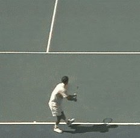
Tossing height creates the necessary interval to develop rhythm, especially with a full body coil like Pete.
Because there is no oncoming ball (with a corresponding oncoming velocity and oncoming force), the service motion in general is much more relaxed than are groundstrokes or volleys, both of which involve collisions with speeding balls.
It's almost impossible to do all this with an ultra low toss. That's why the few players that have perfected the low toss delivery-Ivanisievic or Kevin Curren or the legendary Roscoe Tanner--had minimal bio-mechanical motions relying on the arm swing. Who knows, maybe that's also one reason Goran has a rotator cuff that is now 80% torn.
It also worth noting that these are probably the only 3 top players over the past 30 years who used this motion! Virtually every other top player on both the men's and women's side has had a high toss, with the ball dropping at contact.
I find it amazing that so many coaches, television commentators, and teachers still seem to believe the best place to hit the ball is at the top of the toss (Usually they don't even serve that way themselves!).
Try it yourself. Hit practice serves and gradually lower your toss. You'll find there is a point at which you start to tense up and muscle the racquet in the rush to get to the contact point. For most people, this tension occurs at a toss height that is still far above the contact point. That is why trying to lower the toss in the hope of developing more racquet head speed is so counterproductive.
Even if you do have a naturally quick rhythm and a minimal biomechanical motion like Rusedski, the chances are overwhelming you'll still need to hit the ball on the way down to develop a smooth motion that doesn't feel rushed and muscled.
Toss Height
Some of the greatest servers in tennis history have also had the highest tosses. As the animations shows, Pete has an amazingly high toss. Precise measurements will have to wait until Advanced Tennis has the chance to do multi-camera quantitative filming, but for the purposes of an estimate, we can say it drops at least 18" and possibly as much as 2 feet.
Rusedski's toss is much lower, as the animation also shows, but it still drops substantially. We can estimate this drop to be at least 8 to 12 inches or possibly a little more.
The point of this analysis is not to say player should try to copy an exact toss height from another player. The point is the toss height determines the interval of the service motion and the amount of time you have in turn determines your rhythm.
The average player needs to experiment with the height of the toss to find an interval that allows him to develop a smooth, relaxed rhythm. This will depend on the individual ability of the player, and also the complexity of his biomechanical motion.
The height should be sufficient so that the motion is complete, with a full racquet drop and full extension at contact. It should be relaxed, smooth, and feel comfortably rhythmic, so this timing and feeling can be duplicated naturally without conscious effort or extra muscle from delivery to delivery.
Of course the toss can be too high as well. The toss should not be so high that the player develops any hitches or pauses in the swing pattern, so that he appears to be lagging at any point, waiting for the toss to drop into position.
The right toss height, timing, and rhythm is something that can only be developed through trial and error for the individual player.
Tossing Motion
Now for the second part of the myth of the toss, the tossing motion and the actual path of the ball.
There is a famous apocryphal story that Jack Kramer practiced his toss by placing a handkerchief on the court in front of his front foot, letting his toss drop until he could hit the handkerchief 100 times in a row.
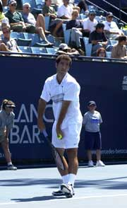
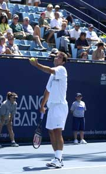
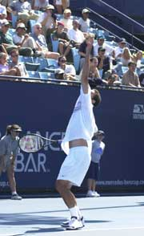
Due to his more extreme turn, Pete's tossing arm is parallel to the baseline at the time of release.
Maybe that's how Kramer practiced, but that's not actually where he tossed the ball when he played! (Check out Jack's real toss in the Stroke Archive). It's not where any top server in the modern game tosses either.
As noted above, the shoulder turn is an important key to good serving, something shared to a greater or lesser degree by top players. Since the arm is attached to the shoulder, when the shoulders turn sideways, so does the arm. The more turn in the motion, the more sideways the arm.
If the tossing arm stays in front, extending forward and straight outward, it is impossible to make more than a very limited turn. This is why this myth is so destructive.
A former top 10 player and top junior coach, who will remain nameless, told me how he was taught to keep his arm in front and extend straight out when he tossed. Only half joking, he told me he would be phoning in coaching tips from his retirement home in Hawaii if he had only understood how to turn his shoulders in his serving motion.
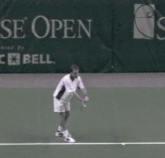
The toss is dropping and moving on an arc toward Rusedski at contact. Due to his quick motion and slice delivery both elements are less extreme than Pete.
When a player turns, his arm will naturally point at least somewhat to the side, and from this position, the only possible path for the toss to reach the contact point is in the shape of an arc. If the ball really traveled straight up and down, players would have to reach to the side with a much lower contact point that would be 2 to 3 feet away from of their bodies!
The amount of shoulder turn, and therefore the exact position of the tossing arm, varies from player to player. Rusedski has one of the more limited turns. But his tossing arm is still pointing to the sideline at about a 45 degree angle at the time of release. Pete's turn goes further and so does his tossing arm. At the time of his ball release, it's 90 degrees to the sideline and actually parallel to the baseline.
This is why the path of the toss has to be an arc. To reach the contact zone, the ball has to travel back toward the player. The contact point occurs somewhere along this arced flight. Left undisturbed, this arced toss would actually land on the opposite side of the player's body.
Because his turn is less extreme, the shape of this arc is also less extreme for Greg compared to Pete. This is also related to the different contact points for the two players. Rusedski's contact point is further to his side. He therefore intercepts the toss further away from his body (more to his left), so that the contact is above or slightly to the side of his hitting shoulder.
Pete's ball travels further along the arc, back closer to his torso since his contact zone is closer to his body, somewhere between his shoulder and the edge of his head.
Again, at this point in our research, attempting to quantify the exact distance the ball travels on the tossing arc is a matter of estimation. For Pete, the movement between the release of the ball and the contact point is probably about 2 1/2 to 3 feet. For Rusedski, it may be more like 1 to 2 feet.
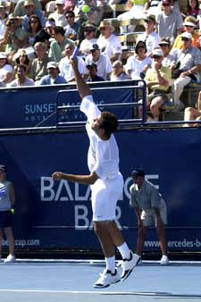
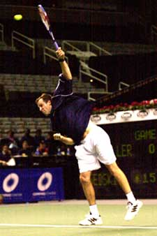
Your exact contact point and the arc of your toss will depend on your individual technical style, somewhere between the extremes of these two great servers.
(These differing contact points in large part account for the different patterns of spin. More on this later and a quantitative analysis of the relative weight of the serve of both players.)
As with the tossing height, each player has to develop a tossing arc that is comfortable and fits his individual technical style. Start by physically establishing your contact point is in relation to your torso. Actually stand on the court in serving position and model your contact point with your arm and racquet.
The exact position will depend, on the nature of your delivery and whether you try to generate more topspin or slice. But it's a good bet it will fall somewhere between the extremes of Sampras and Rusedski.
Next model your body turn and the actual position of your tossing arm at the moment you release the ball. From this point, visualize the ball traveling on an arc to the contact point. Remember, in all cases this point should be out over the baseline and into the court.
As with most technical issues in the strokes, the only way to assess how close you are to your models is to video yourself. That's where the Stroke Archives is an invaluable resource. Whoever your model, Pete, Rusedski, Invanisevic, Rafter, McEnroe, etc, go there and compare your own tossing motion and rhythm to the best players in the world. It takes work, sure, but at least now you're free from two tossing myths that may have been holding you back for years.

John Yandell is widely acknowledged as one of the leading videographers and students of the modern game of professional tennis. His high speed filming for Advanced Tennis and Tennisplayer have provided new visual resources that have changed the way the game is studied and understood by both players and coaches. He has done personal video analysis for hundreds of high level competitive players, including Justine Henin-Hardenne, Taylor Dent and John McEnroe, among others.
In addition to his role as Editor of Tennisplayer he is the author of the critically acclaimed book Visual Tennis. The John Yandell Tennis School is located in San Francisco, California.